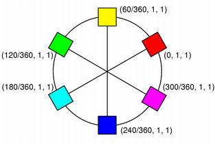
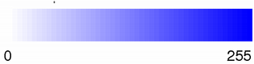
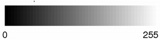

| Home · All Classes · Modules · QSS HELP · QSS 案例 · VER007 HOME |
的而QColor类提供基于RGB ， HSV或CMYK值的颜色。More...
这个类可以醃制。
A Qt.GlobalColor可用于每当一个QColor预计。
的而QColor类提供基于RGB ， HSV或CMYK值的颜色。
颜色是在RGB（红色，绿色和蓝色）分量方面通常指定的，但它也可能在HSV （色调，饱和度和值）和CMYK方面指定（青色，洋红色，黄色和黑色）组件。在另外一个颜色可以使用颜色名称来指定。颜色名称可以是任何的SVG 1.0颜色名称。
| RGB | HSV | CMYK |
|---|---|---|
 |
 |  |
基于RGB值，而QColor构造函数创建的颜色。要创建基于两种HSV或CMYK值而QColor ，使用toHsv（）和toCmyk（ ）分别为功能。这些函数返回使用所需格式的颜色的副本。除了静态fromRgb（ ）fromHsv（）和fromCmyk（ ）函数从指定的值来创建颜色。可替换地，颜色可以被转换为任何使用三种格式的convertTo（）函数（返回所需格式的彩色复印件） ，或任何setRgb（ ）setHsv（）和setCmyk（ ）函数改变this颜色的格式。该spec（ ）函数告诉的颜色是如何规定的。
颜色可以通过传递一个RGB字符串（如“ ＃ 112233 ” ） ，或颜色名称（如“蓝” ） ，到被设置setNamedColor（）函数。颜色名称取自SVG 1.0颜色名称。该name（ ）函数返回的格式为“＃RRGGBB ”颜色的名字。颜色也可以通过使用设置setRgb（ ）setHsv（）和setCmyk（ ） 。为了得到一个较亮或较暗的颜色使用lighter（）和darker（ ）分别为功能。
该isValid（ ）函数表示而QColor是否是合法的。例如， RGB颜色与RGB值超出范围是违法的。出于性能原因，而QColor大多无视非法的颜色，因为这个原因，使用了无效的颜色的结果是不确定的。
色分量可分别被检索，例如，使用red（ ）hue（）和cyan（ ） 。也可以使用检索一气呵成的颜色分量的值的getRgb（ ）getHsv（）和getCmyk（）函数。使用RGB颜色模型中，颜色分量，另外可以与访问rgb（ ） 。
有几个相关的非会员：QRgb是typdef为一个unsigned int表示的RGB值三元（ R， G，B ） 。请注意，它也可以容纳的alpha通道的值（有关详细信息，请参阅Alpha-Blended Drawing节）。该qRed（ ）qBlue（）和qGreen（ ）函数返回给定的相应组件QRgb值，而qRgb（）和qRgba（ ）函数创建并返回QRgb根据给定的元件值三元组。最后，该qAlpha（ ）函数返回所提供的alpha分量QRgb和qGray（）函数计算并返回基于给定值的灰度值。
而QColor是平台和设备无关。该QColormap类的颜色映射到硬件。
有关油画一般的详细信息，请参阅Paint System文档。
而QColor支持浮点精度，并提供所有的颜色分量函数的浮点版本，例如：getRgbF（ ）hueF（）和fromCmykF（ ） 。注意，由于该部件在使用16位整数存储，有可能是使用例如设置的值之间的微小偏差，setRgbF（）和由返回的值getRgbF（ ）函数由于四舍五入。
而整数根据功能需要在0-255范围内的值（除hue（），它必须在0-359范围内的值） ，浮点函数接受的范围值0.0 - 1.0 。
而QColor还支持alpha混合大纲和灌装。颜色的Alpha通道指定了透明效果， 0表示完全透明的颜色，而255表示完全不透明的颜色。例如：
// Specify semi-transparent red painter.setBrush(QColor(255, 0, 0, 127)); painter.drawRect(0, 0, width()/2, height()); // Specify semi-transparent blue painter.setBrush(QColor(0, 0, 255, 127)); painter.drawRect(0, 0, width(), height()/2);
上面的代码将产生以下输出：

Alpha混合绘图支持在Windows，Mac OS X和在具有在X渲染扩展安装X11系统。
颜色的Alpha通道可以检索和使用设置alpha（）和setAlpha如果（）函数的值是一个整数，并alphaF（）和setAlphaF（ ）如果它的值是QREAL （双） 。默认情况下， alpha通道被设置为255 （不透明） 。检索和设置allRGB颜色组件（包括Alpha通道）一气呵成，使用rgba（）和setRgba（）函数。
有由所描述的20预定QColorsQt.GlobalColor枚举，包括黑色，白色，小学和中学的颜色，颜色较深的版本的这些颜色和三种深浅灰色的。而QColor还认识了各种颜色的名称;静colorNames（ ）函数返回一个QStringList颜色的名称而QColor知道。

此外，该Qt.color0，Qt.color1和Qt.transparent颜色用于特殊用途。
Qt.color0（零像素值），并Qt.color1（非零像素值）是特殊的颜色用于QBitmaps绘制。与绘画Qt.color0设置位图位为0（透明的，也就是说，背景） ，并用绘画Qt.color1设置比特为1（不透明，即，前景） 。
Qt.transparent用于指示一个透明像素。当用该值画，像素值将被使用适合于所使用的底层像素格式。
RGB模式是面向硬件。其代表性接近大多数显示器显示。与此相反， HSV表示的方式更适合于人的感知颜色的颜色。例如，关系“强于”，“比暗” ，和“相反的”容易地表达在HSV但更难于RGB来表示。
单纯疱疹病毒，如RGB ，有三个组成部分：



下面是一些例子：纯红色是H = 0 ， S = 255 ，V = 255 ;暗红色，稍走向洋红色，可为H = 350 （相当于-10 ） ， S = 255 ，V = 180 ;一个浅灰色的淡红色可配H约0 （比如350-359或0-10） ，S 50-100 ，和S = 255 。
Qt的返回无彩色-1的色调值。如果你传递一个色调值过大， Qt的强制它进入范围。顺化360或720被视为0 ;色相540被视为180 。
除了标准的HSV模型， Qt提供了一个alpha通道，以功能alpha-blended drawing。
HSL类似于单纯疱疹病毒。而不是从HSV值参数， HSL具有亮度参数。亮度参数去从黑色到颜色，从颜色为白色。如果你在晚上的黑色或暗灰色到外面去。在一天其丰富多彩的，但如果你看一下在一个真正强大的光的事情，他们要白洗了。
而RGB和HSV颜色模型用于显示在电脑萤幕上， CMYK模型是用在印刷机和一些硬拷贝设备的四色印刷工艺。
CMYK四部分组成，全部在范围0-255 ：青色（C ） ，品红（M ） ，黄色（Y）和黑色（K ） 。青色，品红色和黄色的被称为减色; CMYK颜色模型由开始的白色表面，然后通过应用适当的部件中减去颜色产生的颜色。同时结合青色，品红色和黄色给人的色黑，减去一个或多个将产生的任何其他颜色。当在不同的百分比相结合，这三种颜色可以创造颜色的整个频谱。
将100 ％的青色，品红和黄色does产生黑色，但结果并不理想，因为它浪费墨水，增加了干燥时间，并且在打印时给出了一个泥泞的颜色。出于这个原因，黑是专业的印刷加提供了坚实的黑色调，因此称为“四色” 。
除了标准的CMYK模型， Qt提供了一个alpha通道，以功能alpha-blended drawing。
指定颜色的类型，可以是RGB ， HSV ， CMYK或HSL 。
| Constant | Value |
|---|---|
| QColor.Rgb | 1 |
| QColor.Hsv | 2 |
| QColor.Cmyk | 3 |
| QColor.Hsl | 4 |
| QColor.Invalid | 0 |
See also spec（）和convertTo（ ） 。
构建了一个无效的颜色的RGB值（0，0 ，0）。无效的颜色是没有正确设置为底层窗口系统的颜色。
无效的颜色的Alpha值是不确定的。
See also isValid（ ） 。
构造一个具有RGB值的颜色r，g，b和的alpha通道（透明度）值a。
颜色是左无效的，如果任何参数是无效的。
See also setRgba（）和isValid（ ） 。
构造一个颜色的值color。 alpha组件将被忽略并设置为固体。
See also fromRgb（）和isValid（ ） 。
构造一个命名的颜色以同样的方式为setNamedColor（）用给定的name。
颜色是左无效的，如果name不能被解析。
See also setNamedColor（ ）name（）和isValid（ ） 。
构造一个命名的颜色以同样的方式为setNamedColor（）用给定的name。
颜色是左无效的，如果name不能被解析。
See also setNamedColor（ ）name（）和isValid（ ） 。
构造一个颜色，是副本color。
See also isValid（ ） 。
返回True如果setNamedColor（ ）是允许查找颜色的X11颜色数据库。默认情况下，这个函数返回False 。
Note:此功能仅可在X11平台上。
See also setAllowX11ColorNames（ ） 。
返回此颜色的Alpha颜色分量。
See also setAlpha（ ）alphaF（）和Alpha-Blended Drawing。
返回此颜色的Alpha颜色分量。
See also setAlphaF（ ）alpha（）和Alpha-Blended Drawing。
返回该颜色的黑色成分。
See also blackF（ ）getCmyk（）和The CMYK Color Model。
返回该颜色的黑色成分。
See also black（ ）getCmykF（）和The CMYK Color Model。
返回该颜色的蓝色分量。
See also setBlue（ ）blueF（）和getRgb（ ） 。
返回该颜色的蓝色分量。
See also setBlueF（ ）blue（）和getRgbF（ ） 。
返回QStringList包含颜色名称的Qt知道。
See also Predefined Colors。
创建副本this颜色在由指定的格式colorSpec。
See also spec（ ）toCmyk（ ）toHsv（ ）toRgb（）和isValid（ ） 。
返回该颜色的青色成分。
See also cyanF（ ）getCmyk（）和The CMYK Color Model。
返回该颜色的青色成分。
See also cyan（ ）getCmykF（）和The CMYK Color Model。
返回一个暗（或亮）色，但不改变这个对象。
如果factor大于100时，这个函数返回一个较深的颜色。环境factor到300返回具有三分之一的亮度的颜色。如果factor小于100 ，则返回的颜色很浅，但我们建议使用lighter（）函数，用于这一目的。如果factor为0或负数，则返回值是不确定的。
该功能可将当前的RGB颜色转换到HSV ，通过划分值（V ）组件factor和颜色转换回RGB 。
此功能被引入Qt的4.3 。
See also lighter（）和isValid（ ） 。
静态方便函数返回一个QColor从给定的CMYK色彩值构造：c（青色） ，m（品红色），y（黄色），k（黑色），并a（ α-信道，即，透明性） 。
所有的值必须在0-255范围内。
See also toCmyk（ ）fromCmykF（ ）isValid（）和The CMYK Color Model。
这是一个重载函数。
静态方便函数返回一个QColor从给定的CMYK色彩值构造：c（青色） ，m（品红色），y（黄色），k（黑色），并a（ α-信道，即，透明性） 。
所有的值必须在0.0-1.0范围内。
See also toCmyk（ ）fromCmyk（ ）isValid（）和The CMYK Color Model。
静态方便函数返回一个QColor从HSV颜色值组成，h（色调） ，s（饱和度） ，l（亮度），和a（ α-信道，即，透明性） 。
价值s，l和a都必须在0-255范围内;价值h必须在0-359的范围。
此功能被引入Qt的4.6 。
See also toHsl（ ）fromHslF（）和isValid（ ） 。
这是一个重载函数。
静态方便函数返回一个QColor从HSV颜色值组成，h（色调） ，s（饱和度） ，l（亮度），和a（ α-信道，即，透明性） 。
所有的值必须在0.0-1.0范围内。
此功能被引入Qt的4.6 。
See also toHsl（ ）fromHsl（）和isValid（ ） 。
静态方便函数返回一个QColor从HSV颜色值组成，h（色调） ，s（饱和度） ，v（值），a（ α-信道，即，透明性） 。
价值s，v和a都必须在0-255范围内;价值h必须在0-359的范围。
See also toHsv（ ）fromHsvF（ ）isValid（）和The HSV Color Model。
这是一个重载函数。
静态方便函数返回一个QColor从HSV颜色值组成，h（色调） ，s（饱和度） ，v（值），a（ α-信道，即，透明性） 。
所有的值必须在0.0-1.0范围内。
See also toHsv（ ）fromHsv（ ）isValid（）和The HSV Color Model。
静态方便函数返回一个QColor从给定的构造QRgb值rgb。
的alpha分量rgb被忽略（即，它会自动设置为255 ） ，使用fromRgba（）函数，包括由给定指定的alpha通道QRgb值。
See also fromRgba（ ）fromRgbF（ ）toRgb（）和isValid（ ） 。
静态方便函数返回一个QColor从RGB颜色值构造，r（红色），g（绿色） ，b（蓝色），并a（ α-信道，即，透明性） 。
所有的值必须在0-255范围内。
See also toRgb（ ）fromRgbF（）和isValid（ ） 。
静态方便函数返回一个QColor从给定的构造QRgb值rgba。
不同的是fromRgb（）函数，由给定的指定的alpha通道QRgb值被包括在内。
See also fromRgb（）和isValid（ ） 。
静态方便函数返回一个QColor从RGB颜色值构造，r（红色），g（绿色） ，b（蓝色），并a（ α-信道，即，透明性） 。
所有的值必须在0.0-1.0范围内。
See also fromRgb（ ）toRgb（）和isValid（ ） 。
设置指向的内容c，m，y，k和a，青色，品红色，色彩的CMYK值的黄色，黑色，和alpha通道（透明度）的组件。
这些成分可以单独使用检索到的cyan（ ）magenta（ ）yellow（ ）black（）和alpha（）函数。
See also setCmyk（）和The CMYK Color Model。
设置指向的内容c，m，y，k和a，青色，品红色，色彩的CMYK值的黄色，黑色，和alpha通道（透明度）的组件。
这些成分可以单独使用检索到的cyanF（ ）magentaF（ ）yellowF（ ）blackF（）和alphaF（）函数。
See also setCmykF（）和The CMYK Color Model。
设置指向的内容h，s，l和a，对颜色的HSL值的色相，饱和度，明度，和alpha通道（透明度）的组件。
这些组件可以检索单独使用hueHsl （） ， saturationHsl （） ，lightness（）和alpha（）函数。
此功能被引入Qt的4.6 。
See also setHsl（ ） 。
设置指向的内容h，s，l和a，对颜色的HSL值的色相，饱和度，明度，和alpha通道（透明度）的组件。
这些组件可以检索单独使用hueHslF （） ， saturationHslF （） ，lightnessF（）和alphaF（）函数。
此功能被引入Qt的4.6 。
See also setHsl（ ） 。
设置指向的内容h，s，v和a，对颜色的HSV值的色相，饱和度，值和alpha通道（透明度）的组件。
这些成分可以单独使用检索到的hue（ ）saturation（ ）value（）和alpha（）函数。
See also setHsv（）和The HSV Color Model。
设置指向的内容h，s，v和a，对颜色的HSV值的色相，饱和度，值和alpha通道（透明度）的组件。
这些成分可以单独使用检索到的hueF（ ）saturationF（ ）valueF（）和alphaF（）函数。
See also setHsv（）和The HSV Color Model。
设置指向的内容r，g，b和a，以红，绿，蓝和alpha通道（透明度）的颜色的RGB值的组件。
这些成分可以单独使用检索到的red（ ）green（ ）blue（）和alpha（）函数。
设置指向的内容r，g，b和a，以红，绿，蓝和alpha通道（透明度）的颜色的RGB值的组件。
这些成分可以单独使用检索到的redF（ ）greenF（ ）blueF（）和alphaF（）函数。
返回该颜色的绿色分量。
See also setGreen（ ）greenF（）和getRgb（ ） 。
返回该颜色的绿色分量。
See also setGreenF（ ）green（）和getRgbF（ ） 。
返回该颜色的色调色彩分量。
此功能被引入Qt的4.6 。
See also getHslF（）和getHsl（ ） 。
返回该颜色的色调色彩分量。
此功能被引入Qt的4.6 。
返回该颜色的饱和度色彩分量。
此功能被引入Qt的4.6 。
See also saturationF（ ）getHsv（）和The HSV Color Model。
返回该颜色的饱和度色彩分量。
此功能被引入Qt的4.6 。
See also saturationF（）和getHslF（ ） 。
返回该颜色的色调色彩分量。
See also hueF（ ）getHsv（）和The HSV Color Model。
返回该颜色的色调色彩分量。
See also hue（ ）getHsvF（）和The HSV Color Model。
返回该颜色的饱和度色彩分量。
See also saturationF（ ）getHsv（）和The HSV Color Model。
返回该颜色的饱和度色彩分量。
See also saturation（ ）getHsvF（）和The HSV Color Model。
返回该颜色的色调色彩分量。
颜色是隐式转换到HSV 。
See also hsvHue（ ）hueF（ ）getHsv（）和The HSV Color Model。
返回该颜色的色调色彩分量。
颜色是隐式转换到HSV 。
See also hsvHueF（ ）hue（ ）getHsvF（）和The HSV Color Model。
返回True如果颜色是有效的，否则返回False 。
返回True如果name是有效的颜色名称和可用于构造一个有效的QColor对象，否则返回False 。
它使用在所使用的算法相同setNamedColor（ ） 。
此功能被引入Qt的4.7 。
See also setNamedColor（ ） 。
返回一个打火机（或较暗）的颜色，但不改变这个对象。
如果factor大于100时，这个函数返回一个较浅的颜色。环境factor150返回一个颜色是亮50 ％ 。如果factor小于100 ，则返回颜色比较深，但我们建议使用darker（）函数，用于这一目的。如果factor为0或负数，则返回值是不确定的。
该功能可将当前的RGB颜色转换到HSV ，通过乘以值（V ）组件factor和颜色转换回RGB 。
此功能被引入Qt的4.3 。
See also darker（）和isValid（ ） 。
返回该颜色的明度色彩分量。
此功能被引入Qt的4.6 。
See also lightnessF() and getHsl().
返回该颜色的明度色彩分量。
此功能被引入Qt的4.6 。
返回该颜色的品红色分量。
See also magentaF（ ）getCmyk（）和The CMYK Color Model。
返回该颜色的品红色分量。
See also magenta（ ）getCmykF（）和The CMYK Color Model。
返回格式为“ ＃ RRGGBB ”颜色的名称，即一个“＃”字符后跟三个两位十六进制数字。
See also setNamedColor（ ） 。
返回该颜色的红色分量。
See also setRed（ ）redF（）和getRgb（ ） 。
返回该颜色的红色分量。
See also setRedF（ ）red（）和getRgbF（ ） 。
返回的颜色的RGB值。 Alpha值是不透明的。
See also setRgb（ ）getRgb（）和rgba（ ） 。
返回RGB值的颜色，包括其阿尔法。
对于无效的颜色，返回的颜色的Alpha值是不确定的。
返回该颜色的饱和度色彩分量。
颜色是隐式转换到HSV 。
See also hsvSaturation（ ）saturationF（ ）getHsv（）和The HSV Color Model。
返回该颜色的饱和度色彩分量。
颜色是隐式转换到HSV 。
See also hsvSaturationF（ ）saturation（ ）getHsvF（）和The HSV Color Model。
允许setNamedColor（ ）来查找颜色的X11颜色数据库，如果enabled。默认情况下，setNamedColor（ ）不not查找颜色的X11颜色数据库。
Note:此功能仅可在X11平台上。
See also setNamedColor（）和allowX11ColorNames（ ） 。
设置此颜色的alpha来alpha。整数阿尔法被指定在0-255范围内。
See also alpha（ ）alphaF（）和Alpha-Blended Drawing。
设置此颜色的alpha来alpha。 QREAL阿尔法被指定在0.0-1.0范围内。
See also alphaF（ ）alpha（）和Alpha-Blended Drawing。
设置该颜色的蓝色分量到blue。整数组件0-255范围内指定。
See also blue（ ）blueF（）和setRgb（ ） 。
设置该颜色的蓝色分量到blue。浮子组件在0.0-1.0范围指定。
See also blueF（ ）blue（）和setRgbF（ ） 。
设置颜色为CMYK值，c（青色） ，m（品红色），y（黄色），k（黑色），并a（ α-信道，即，透明性） 。
所有的值必须在0-255范围内。
See also getCmyk（ ）setCmykF（）和The CMYK Color Model。
这是一个重载函数。
设置颜色为CMYK值，c（青色） ，m（品红色），y（黄色），k（黑色），并a（ α-信道，即，透明性） 。
所有的值必须在0.0-1.0范围内。
See also getCmykF（ ）setCmyk（）和The CMYK Color Model。
设置这个颜色的绿色分量来green。整数组件0-255范围内指定。
See also green（ ）greenF（）和setRgb（ ） 。
设置这个颜色的绿色分量来green。浮子组件在0.0-1.0范围指定。
See also greenF（ ）green（）和setRgbF（ ） 。
设置一个HSL颜色值;h是色调s是饱和，l是轻和a是HSL颜色的alpha分量。
饱和度，值和alpha通道的值必须在0-255范围内，色调值必须大于-1 。
此功能被引入Qt的4.6 。
See also getHsl（）和setHslF（ ） 。
设置一个HSL颜色明度;h是色调s是饱和，l是轻和a是HSL颜色的alpha分量。
所有的值必须在0.0-1.0范围内。
此功能被引入Qt的4.6 。
See also getHslF（）和setHsl（ ） 。
设置HSV颜色值;h是色调s是饱和，v是值和a是HSV颜色的alpha分量。
饱和度，值和alpha通道的值必须在0-255范围内，色调值必须大于-1 。
See also hsv（ ）getHsv（ ）setHsvF（）和The HSV Color Model。
设置HSV颜色值;h是色调s是饱和，v是值和a是HSV颜色的alpha分量。
所有的值必须在0.0-1.0范围内。
See also getHsvF（ ）setHsv（）和The HSV Color Model。
设置该RGB值QColor至name，这可能是在这些格式之一：
颜色是无效的，如果name不能被解析。
See also QColor（ ）name（ ）isValid（）和allowX11ColorNames（ ） 。
设置这个颜色的红色分量red。整数组件0-255范围内指定。
See also red（ ）redF（）和setRgb（ ） 。
设置这个颜色的红色分量red。浮子组件在0.0-1.0范围指定。
See also redF（ ）red（）和setRgbF（ ） 。
设置的RGB值，以r，g，b和α值，以a。
所有的值必须在0-255范围内。
See also rgb（ ）getRgb（）和setRgbF（ ） 。
这是一个重载函数。
设置的RGB值，以rgb。 alpha值设置为不透明的。
设置的RGB值，以rgba，包括其阿尔法。
设置此颜色的颜色通道r（红色），g（绿色） ，b（蓝色）和a（α，透明度） 。
所有的值必须在0.0-1.0范围内。
See also rgb（ ）getRgbF（）和setRgb（ ） 。
返回的颜色是如何规定的。
创建并返回一个CMYKQColor在此基础上的色彩。
See also fromCmyk（ ）convertTo（ ）isValid（）和The CMYK Color Model。
创建并返回一个HSLQColor在此基础上的色彩。
See also fromHsl（ ）convertTo（）和isValid（ ） 。
创建并返回一个单纯疱疹病毒QColor在此基础上的色彩。
See also fromHsv（ ）convertTo（ ）isValid（）和The HSV Color Model。
创建并返回一个RGBQColor在此基础上的色彩。
See also fromRgb（ ）convertTo（）和isValid（ ） 。
返回此颜色值的颜色分量。
See also valueF（ ）getHsv（）和The HSV Color Model。
返回此颜色值的颜色分量。
See also value（ ）getHsvF（）和The HSV Color Model。
返回该颜色的黄色成分。
See also yellowF（ ）getCmyk（）和The CMYK Color Model。
返回该颜色的黄色成分。
See also yellow（ ）getCmykF（）和The CMYK Color Model。
| PyQt 4.10.3 for X11 | Copyright © Riverbank Computing Ltd and Nokia 2012 | Qt 4.8.5 |